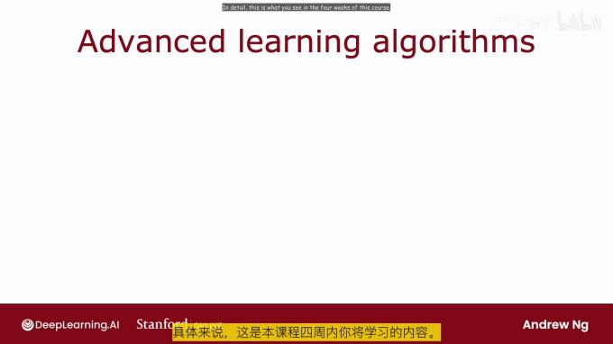
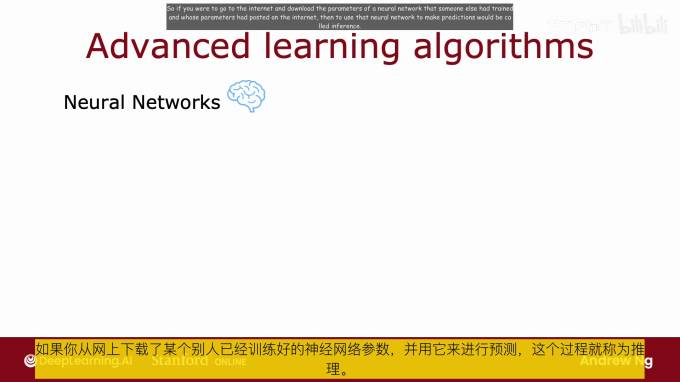
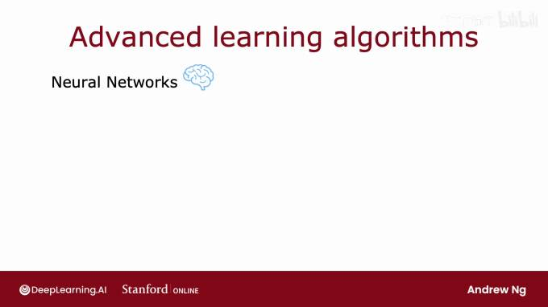
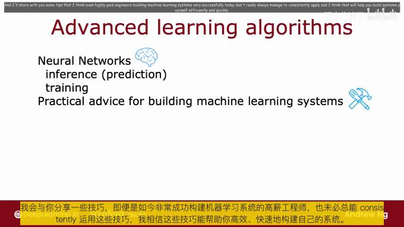
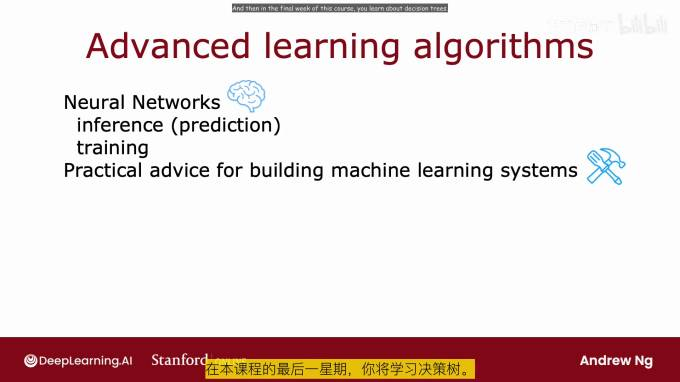
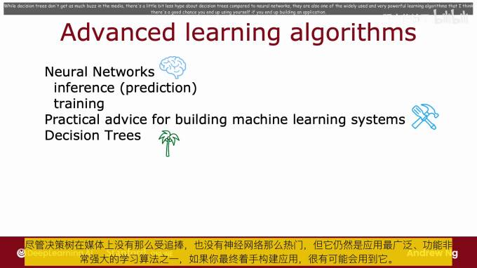

00:02欢迎来到本次机器学习专业课程的第二门课。
00:07在这门课程中，你将学习神经网络，也就是常说的深度学习算法，以及决策树。
00:15它们是目前最强大、应用最广泛的机器学习算法之一，你将亲自动手实现它们，并让它们为你所用。
00:25在这门课程中，你还会学到关于如何构建机器学习系统的实用建议，这部分内容是本课程独有的。
00:36当你在构建实际的机器学习系统时，需要做出很多决策，比如你是应该花更多时间去收集数据，还是应该购买一块性能更强的图形处理器来构建一个更大的神经网络。
00:52即便是现在，当我走访一家领先的科技公司，并与那里的机器学习应用团队交流时，有时看到他们过去六个月的工作，我难免会想，哎，要是六个月前有人告诉他们那种方法效果不会太好就好了。
01:10借助你在本课程中学到的一些技巧，我希望你能避免浪费那六个月的时间，而是能更系统、更明智地决定如何构建实用的机器学习应用。
01:28具体来说，这是本课程四周内你将学习的内容。

01:32第一周，我们将学习神经网络以及如何进行推理或预测。
01:39如果你从网上下载了某个别人已经训练好的神经网络参数，并用它来进行预测，这个过程就称为推理。


01:52你将在第一周学习神经网络的工作原理以及如何进行推理。
01:58第二周，你将学习如何训练自己的神经网络。
02:04具体来说，如果你拥有一组带有标签的训练样本，包括输入特征 x 和输出标签 y，你将学习如何自行训练神经网络的参数。
02:16在第三周，我们将深入探讨构建机器学习系统的实用建议。
02:21我会与你分享一些技巧，即便是如今非常成功构建机器学习系统的高薪工程师，也未必总能运用这些技巧，我相信这些技巧能帮助你高效、快速地构建自己的系统。

02:40在本课程的最后一星期，你将学习决策树。

02:45尽管决策树在媒体上没有那么受追捧，也没有神经网络那么热门，但它仍然是应用最广泛、功能非常强大的学习算法之一，如果你最终着手构建应用，很有可能会用到它。

03:01尽管决策树在媒体上没有那么受追捧，也没有神经网络那么热门，但它仍然是应用最广泛、功能非常强大的学习算法之一，如果你最终着手构建应用，很有可能会用到它。
03:02那么，就让我们开始学习神经网络吧。
03:06我们首先快速了解一下人类大脑，也就是生物大脑是如何工作的。